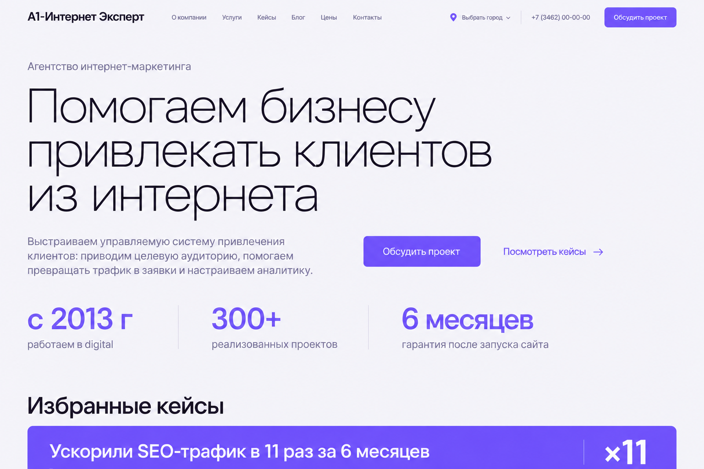
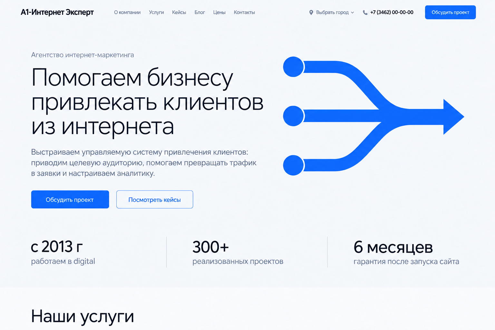
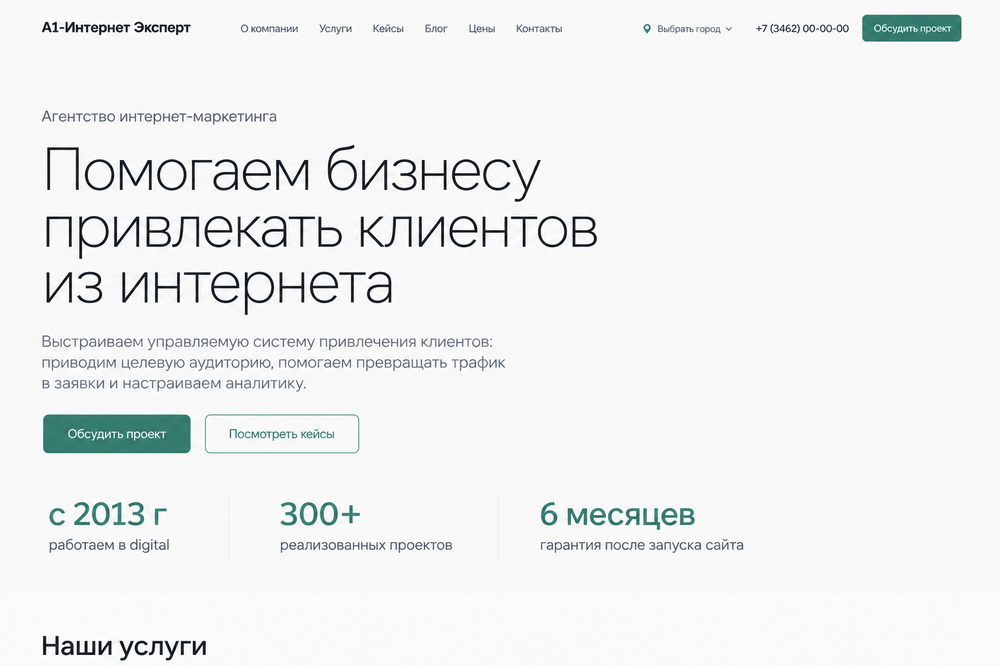

Проектный альбом
Крупная лёгкая типографика, свободная композиция и заметные результаты. Начало блока кейсов продолжает первый экран.
Рассмотреть макетСравните композицию, типографику и цвет. Каждый макет можно открыть крупнее и рассмотреть в полном размере.

Крупная лёгкая типографика, свободная композиция и заметные результаты. Начало блока кейсов продолжает первый экран.
Рассмотреть макет
Двухколоночная композиция с синей графикой связей. Визуальный акцент поддерживает идею совместной работы сайта, продвижения и аналитики.
Рассмотреть макет
Спокойная светлая подача с большим свободным полем. Зелёные акценты выделяют действия и показатели.
Рассмотреть макет